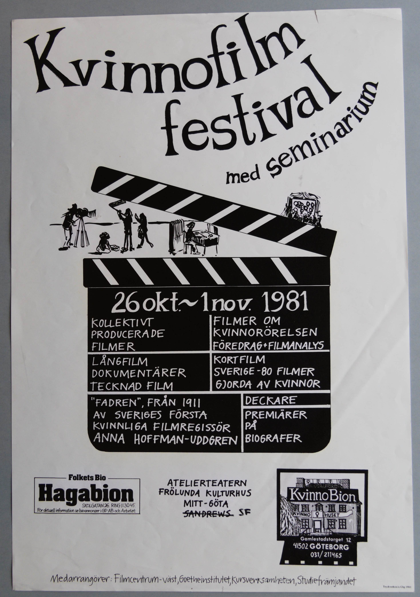
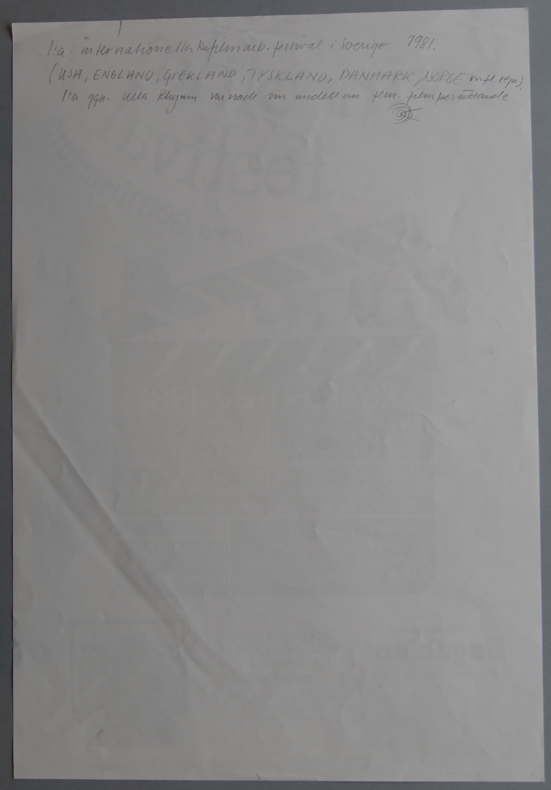

Transkriberad och digitiserad version av affisch från en filmfestival med
seminarium vid kvinnobion hösten år 1981
Faksimil
Framsida av affisch
Transkription
festival
med seminarium
26 okt.~1nov. 1981
KOLLEKTIVT
PRODUCERADE
FILMER
LÅNGFILM
DOKUMENTÄRER
TECKNAD FILM
”FADREN”, FRÅN 1911
AV SVERIGES FÖRSTA
KVINNLIGA FILMREGISSÖR
ANNA HOFFMAN-UDDGREN
FILMER OM
KVINNORÖRELSEN
FÖREDRAG+FILMANALYS
KORTFILM
SVERIGE -80 FILMER
GJORDA AV KVINNOR
DECKARE
PREMIÄRER
PÅ
BIOGRAFER
Faksimil
Baksida av affisch, med text skriven med blyerts. Okänt när den handskrivna texten tillkommit.

Transkription
1:a internationella kv.filmarb. festival i Sverige. 1981.
(USA,
ENGLAND, GREKLAND, TYSKLAND, DANMARK, NORGE mfl. repr).
1:a ggn. Ulla
Rhyman skissade sin modell av fem. filmberättande.